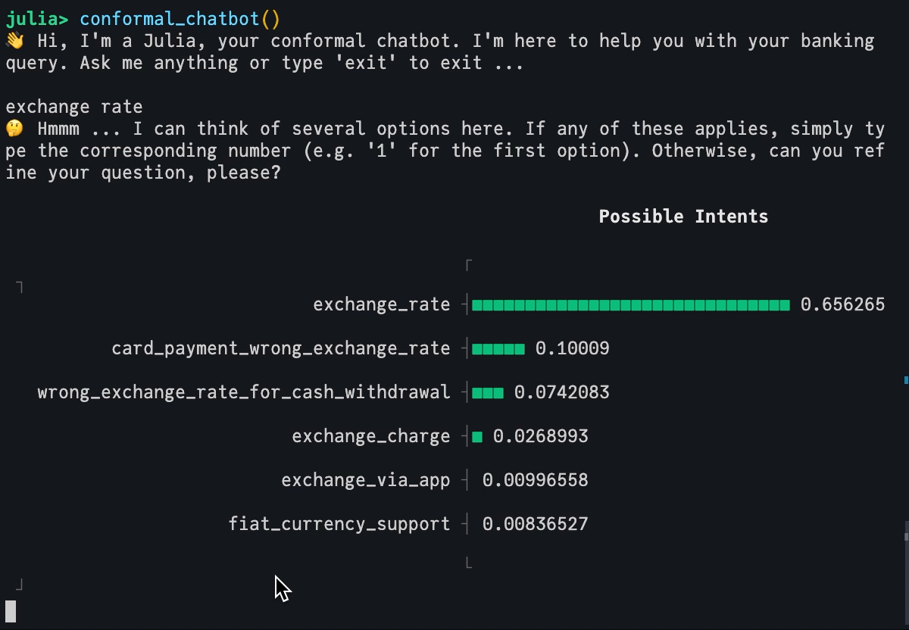

%%{
init: {
'theme': 'base',
'themeVariables': {
'primaryColor': '#BB2528',
'primaryTextColor': '#fff',
'primaryBorderColor': '#7C0000',
'lineColor': '#F8B229',
'secondaryColor': '#006100',
'tertiaryColor': '#e9edfb',
'fontFamily': "avenir"
}
}
}%%
flowchart TB
classDef taija fill:#389836,stroke:#333,color:#fff;
classDef core fill:#CB3C33,stroke:#333,color:#fff;
classDef base fill:#9558B2,stroke:#333,color:#fff;
%% Base
base["TaijaBase.jl"]
%% Meta
interop["TaijaInteroperability.jl"]
data["TaijaData.jl"]
parallel["TaijaParallel.jl"]
plotting["TaijaPlotting.jl"]
%% Core
ce["CounterfactualExplanations.jl"]
cp["ConformalPrediction.jl"]
lr["LaplaceRedux.jl"]
jem["JointEnergyModels.jl"]
%% External
mlj["MLJ.jl"]
flux["Flux.jl"]
class base base;
class interop,data,parallel,plotting taija;
class ce,cp,lr,jem core;
%% Graph
base --> ce & cp & lr & jem
subgraph "Core Packages"
ce & cp & lr & jem
end
subgraph "Meta Packages"
data & plotting & parallel & interop
end
subgraph "External Packages"
mlj & flux
end
What’s new in Trustworthy AI in JuliA?
JuliaCon 2024
Thursday, July 11, 2024
What’s Taija?
Taija is a small but growing ecosystem of packages geared towards Trustworthy Artificial Intelligence in Julia—Taija

Use Cases
Who could benefit from Taija?
- Researchers in AI and ML, particularly in the fields of explainability, uncertainty quantification, and Bayesian deep learning: (
 , …)
, …) - Practitioners using conventional ML and DL models who are interested in understanding the models’ decisions and their uncertainty.
- Julia developers who want to contribute to the ecosystem (any level of expertise is welcome!).
Pick your Poison
All of these counterfactuals are valid explanations for the model’s prediction.
Which one would you pick?

Figure 2: Turning a 9 into a 7: Counterfactual explanations for an image classifier produced using Wachter (Wachter, Mittelstadt, and Russell 2017), Schut (Schut et al. 2021) and REVISE (Joshi et al. 2019).
Faithful Counterfactuals

Intent Classification
Intent classification (IC) in dialogue systems is a common task and a natural place for conformal prediction.
- Simply returning top-1 softmax likely wrong.
- Existing ad-hoc approach is top-
.
- Conformal classifiers predict sets that fulfill coverage guarantee.

What’s new in …
CounterfactualExplanations.jl: A package for Counterfactual Explanations and Algorithmic Recourse in Julia.
- refactoring
- performance improvements
- new features
- JCon Proceedings (Altmeyer, Deursen, et al. 2023).

Composable Generators
The largest single category of CE methods solves the following optimization through gradient descent:
Why not compose generators that combine ideas from different off-the-shelf generators?
Explaining Different Models
Besides any Flux.jl model, package extensions add support for
- DecisionTree.jl
- NeuroTrees.jl (see Jeremie’s talk)
- LaplaceRedux.jl
- JointEnergyModel.jl (upcoming)

What’s new in …
LaplaceRedux.jl: A package for Effortless Bayesian Deep Learning through Laplace Approximation for Flux.jl neural networks.
- new features
- interface to MLJ
- JCon Proceedings (under review).

What’s new in …
ConformalPrediction.jl: A package for Predictive Uncertainty Quantification through Conformal Prediction for Machine Learning models trained in MLJ.
- refactoring
- new features (@MojiFarmanbar)

Joint Energy Models
JointEnergyModels.jl: A package for Joint Energy-Based Models Models in Julia (early development).
Hybrid models that can predict and generate (Grathwohl et al. 2020).
- Flux.jl interface
- MLJFlux.jl interface

Questions?